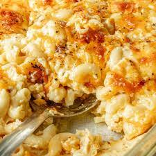

Baked Mac and Cheese

Ingredients
This Baked Mac and Cheese recipe is totally gourmet with the addition of crispy bacon and panko bread crumb topping. It will outshine any mac and cheese you've tasted!
- 1/2 pound elbow macaroni (about 1 ½ cups)
- 6 slices bacon
- 2 Tablespoon butter
- 2 Tablespoons all-purpose flour
- 1 1/2 cups milk
- 3/4 cup half and half
- 1 1/2 teaspoons cornstarch
- 1/2 teaspoons dijon mustard
- 1 1/2 teaspoons chicken bouillon paste , or bouillon powder
- 1/4 teaspoon onion powder
- 1/2 teaspoon garlic powder
- 1/2 teaspoon dried parsley flakes
- 1/2 teaspoon salt , or more to taste
- 1/4 teaspoon ground black pepper , or more to taste
- 2 cups freshly grated sharp cheddar cheese *
- 1/2 cup freshly grated parmesan cheese
Steps
- Boil pasta according to package instructions, just until al dente. Don’t overcook! Strain (don't rinse) and set aside.
- Shred cheese and set aside to allow to come to room temperature.
- Preheat oven to 350 degrees F. Lightly grease a 8×8 baking dish.
- Cook bacon in a large skillet over medium heat until crispy, about 5-7 minutes. Remove bacon to a plate lined with paper towels. Remove some, but not all of the grease from the pan and chop/crumble into pieces.
- Make Cheese Sauce: Add 1 tablespoon butter to the pan and then whisk in flour. Cook, stirring, for 2 minutes. Reduce heat to low and gradually whisk in milk. Add the cornstarch to the half and half and whisk until smooth. Gradually add it to skillet followed by mustard, chicken bullion, onion powder, garlic, powder, parsley, salt and pepper. Cook sauce, stirring well, for a few more minutes, just until it begins to slightly thicken. Remove from heat and stir in shredded cheddar cheese. Taste and add additional seasonings, if needed.
- Add bacon (reserve a handful to top at the end), and cooked pasta and toss to evenly coat in sauce. Pour mixture into 8×8’’ baking dish. Sprinkle parmesan cheese on top.
- Breadcrumb topping: Add panko, melted butter and olive oil to a skillet (or the saucepan used to cook the pasta). Cook over medium-high heat, stirring constantly, until the crumbs are golden brown. Evenly sprinkle over the mac cheese. Add remaining bacon crumbles on top.
- Bake 15-20 minutes or until bubbly. Serve warm.